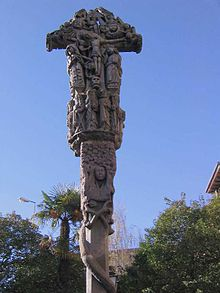
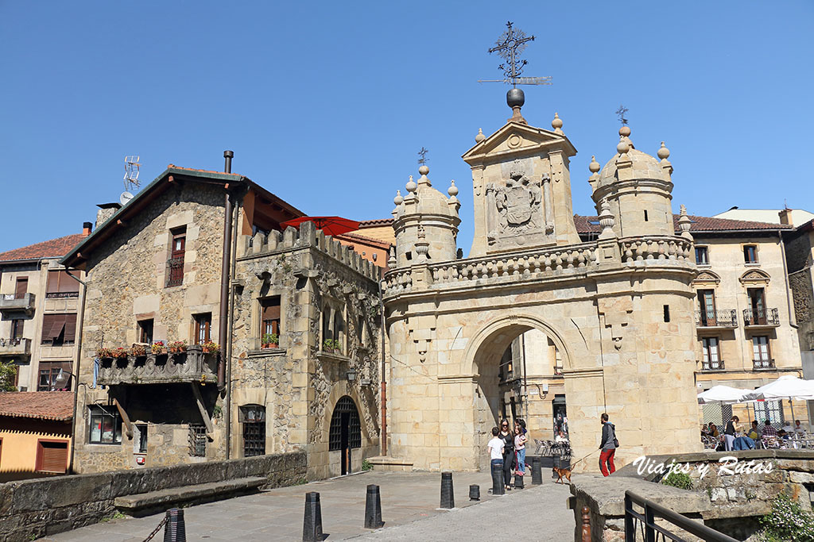

De origen prerromano representa un animal cuadrúpedo. No se tiene idea de su significado. Es una pieza escultórica hallada en Durango en 1864 y la obra original se encuentra en el Museo Arqueológico,
Etnográfico e Histórico Vasco, en Bilbao. En Durango, el parque de Ezkurdi acogía la réplica de esta pieza hasta su remodelación. En la actualidad esta réplica se encuentra en la calle Mikeldi de Durango.
Cruz de Kurutziaga

Cruz de Kurutziaga
Trata de finales del siglo XV, es un magnífico ejemplar de cruz de término de estilo gótico (barroquismo gótico), que representa el árbol de la cruz.
Movido de su ubicación original se ha trasladado a la ermita de la Veracruz acondicionada como Museo Kurutzesantu, situada en la misma calle
Arco de Santa Ana

Arco de Santa Ana
Es la única puerta que queda de las antiguas murallas. Fue construido en 1566 y restaurado en 1744; en 2017 fue sometido a una limpieza.
Es de estilo barroco. Ostenta el escudo imperial por una cara, y una hornacina donde se exhibe una Virgen.
Santa María de Uríbarri
Pórtico de la Basílica de Santa María (Andra Mari)
La basílica de Santa María fue construida adosada a la torre de Arandoño que se utilizó como campanario. Data del siglo XIV y es fundamentalmente de estilo gótico al que se le superponen elementos renacentistas.
Sus retablos y demás elementos se han ido restaurando en los últimos años. Su inmenso pórtico con cubierta de madera y sin columnas, el más grande de su especie en Europa,
se apoya en enormes vigas curvas según viejas técnicas de construcción naval, data del siglo XVIII. Sirve para muy diversas actividades realizadas a cubierto.
En el interior destaca el coro elevado que se ubica a los pies de la nave; apoyado sobre un gran arco escarzano, su estética gótica contrasta con el clasicismo que lo rodea.
Hubo de preservarse cuando el templo medieval fue remodelado al gusto romano.